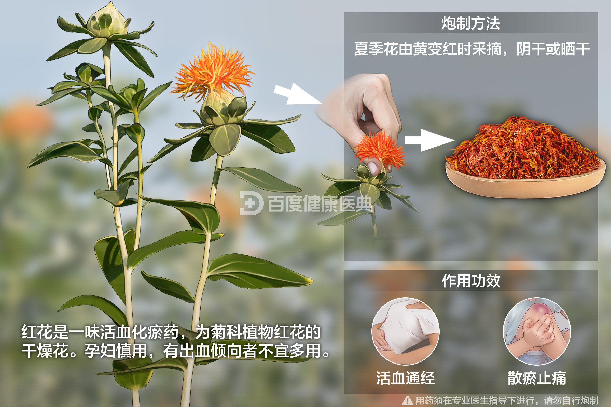
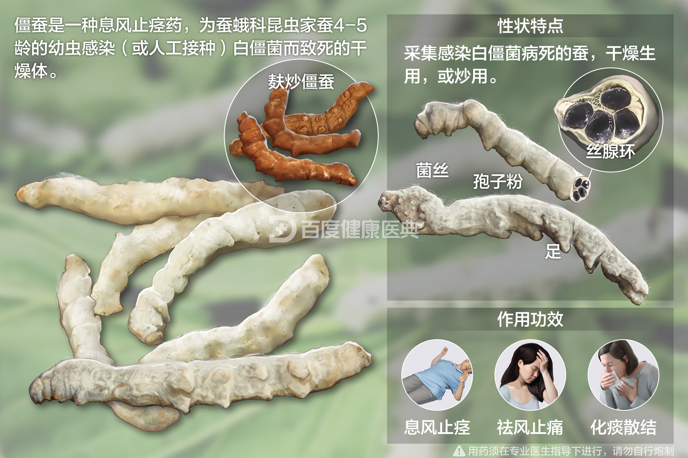
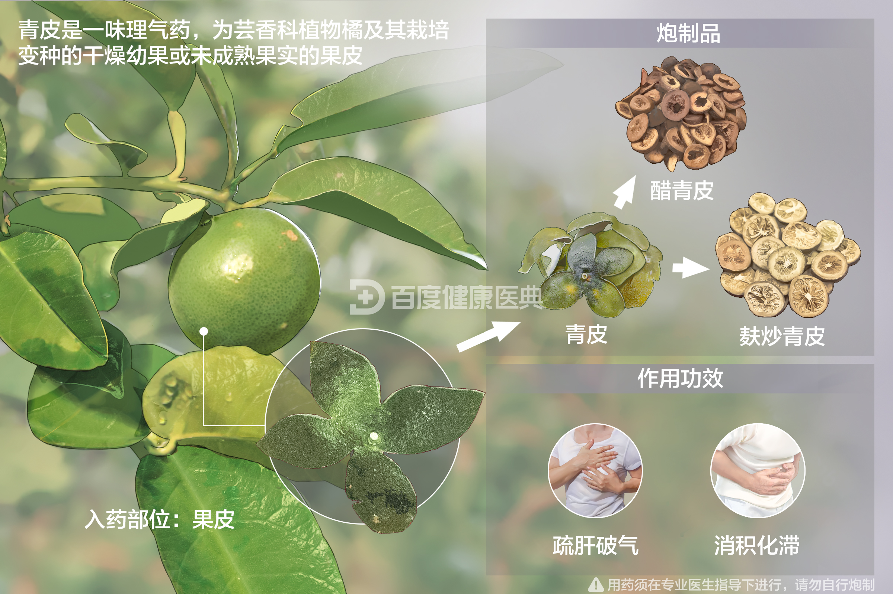

沉香
理气止痛，开窍醒神。
木香
理气和胃，缓解腹痛。
枳壳
理气宽中，缓解胸闷。
槐花
清热凉血，缓解痔疮。
白及
收敛止血，消肿。
侧柏叶
凉血止血，清热解毒。
仙鹤草
止血，清热解毒。


红花
活血化瘀，缓解疼痛。
苏合香
开窍醒神，活血化瘀。
石菖蒲
开窍醒神，利湿。
冰片
清热解毒，开窍醒神。

续断
续筋接骨，缓解骨折。
杜仲
补肝肾，强筋骨。

僵蚕
祛风止痉，缓解头痛。
钩藤
平肝息风，降血压。
桑螵蛸
固精缩尿，止血。
金樱子
固精缩尿，止泻。

青皮
疏肝解郁，缓解胸闷。
郁金
活血化瘀，缓解胸痛。
莱菔子
消食化痰，降气。
麦芽
消食化积，促进消化。
神曲
健脾和胃，消食。

合欢皮
安神解郁，缓解失眠。
远志
安神益智，缓解健忘。
秦艽
清热解毒，利尿。
百部
杀虫，润肺止咳。
杏仁
润肺止咳，润肠通便。
车前子
利尿通淋，清热。

番泻叶
通便，缓解便秘。
火麻仁
润肠通便，缓解便秘。